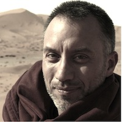

| baris yüksel.
software engineer. machine learning lover. muppets fan. |
|
|

Photo by: Bora Yuksel
Baris Yuksel is an independent consultant and advisor specializing in Machine Learning and Artificial Intelligence. Baris has been focusing on designing and developing next generation features and technologies, trying to create magic moments. Baris worked various teams during his 8 years at Google. Most recently, he was at Google Translate team collaborating with the Google Brain team to migrate Google Translate onto the new deep learning platform. Prior to that, Baris led the engineering team for Project Shield at Google Jigsaw, building a free reverse proxy for protecting newspapers against DDoS attacks. Baris also worked on Google Search with Craig Nevill-Manning, founder of Google New York. His work helped bridging the world between Search and Google Now Assistant making smart news article suggestions and developing recommendation systems. Prior to joining Search, Baris started and lead maps spam team at Google Maps. The spam team built machine learning algorithms dealing with big data, and designed intelligent systems which detected spam. Baris has volunteered in Africa at numerous computer science workshops, teaching new technologies to African college professors. He has an ongoing passion for spreading the knowledge in developing world to transform human experience for a better tomorrow. Baris graduated from MIT with a BS in Electrical Engineering and Computer Science, minoring in Economics. He is the inventor or co-inventor on several patents. He is a native of Istanbul and he currently resides in New York, NY. He loves the city, and has an avid passion to help building a strong tech community there. Baris loves cooking.
|
|
|
baris att barisyuksel dott com tweet@baris_wonders |
|
Selected Patents:
06-13-17 - Document ranking based on entity frequency
10-27-16 - Notification Engine 11-24-15 - Systems and methods of correlating business information to determine spam, closed businesses, and ranking signals 09-15-15 - Systems and methods of detecting keyword-stuffed business titles 04-27-15 - Identifying terms 08-18-15 - Method and system for identifying business records 09-27-11 - Automatic detection of similar business updates by using similarity to past rejected updates 09-07-11 - Method and system for identifying business records 12-03-10 - Systems and methods of detecting keyword-stuffed business titles 10-01-10 - Map spam detection |
Selected Past Talks: 03-31-16 - Decoding the Road: Computational Tessellation of Central Asian Architecture, Center For Architecture, American Institute of Architects NY Chapter, NY 07-04 to 07-08-16 - Tensorflow Machine Learning Training for Googlers @ Google, Mountain View, California 05-07-14 - "Making a Career in Technology", Krash.io @ WeWork, NYC 05-03-14 - "Machine Learning Workshop", NYU Polytechnic 04-26-14 - "Machine Learning Workshop", Tech Triangle U Hackathon, Brooklyn Tech Triangle 03-29-14 - Code For Good, HackDuke, Duke University 03-26-14 - "Software Engineering in Africa", Gallatin Business Club, NYU 03-21-14 - PearlHacks, University of North Carolina 02-27-14 - "Machine Learning Workshop", Penn WiCS, UPenn 02-22-14 - Keynote speech, BluePrint, MIT 02-14-14 - NYUAD International Hackathon, NYUAD, Abu Dhabi, UAE 02-11-14 - "Innovation and Software Engineering", University of Zanzibar, Tanzania 01-28-14 - Google Tech Talk, UPenn 12-10-13 - "Computer Science for High School", Academy for Software Engineering, NYC 12-06-13 - "Machine Learning Workshop", General Assembly, NYC 11-16-13 - HackDuke, Duke University 11-15-13 - NYUHacks, NYU 10-15-13 - Startups of Puerto Rico, Puerto Rico Center, NYC 10-05-13 - HackMIT, MIT 09-21-13 - MHacks, University of Michigan 09-07-13 - PennApps, UPenn 02-02-13 - MHacks, University of Michigan 01-19-13 - "Artificial Intelligence at Google" PennApps, UPenn 01-19-13 - "Google Maps API" PennApps, UPenn 11-16-12 - 88mph Seed Fund, Cape Town, South Africa 11-12-12 - Google Tech Talk on Google Now, Google G-South Africa, Cape Town, South Africa 06-28 to 06-30-12 - Google Faculty Training, "Google Technologies Workshop", Accra, Ghana 06-25 to 06-27-12 - Google Faculty Training, "Google Technologies Workshop", Lagos, Nigeria |